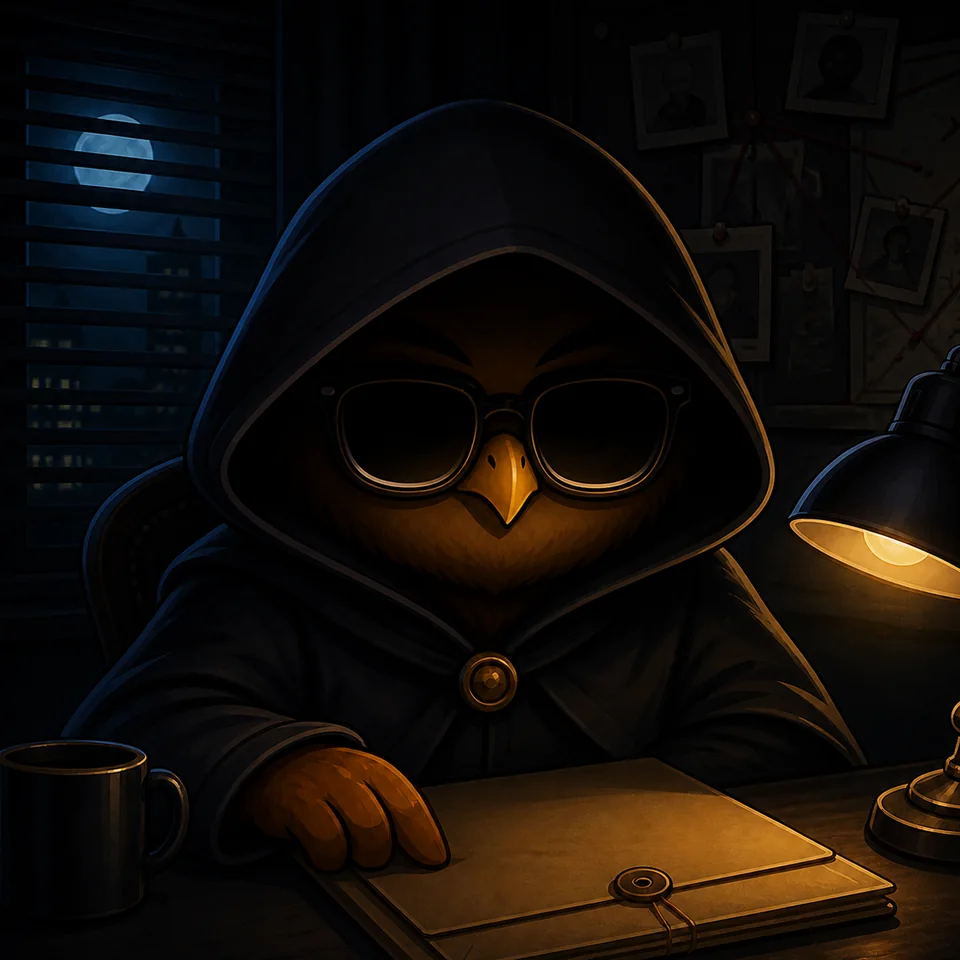

Ночная фазаДело 07
Город засыпает
Кому вы доверяете?
Выберите действие до конца фазы
Что изменилось
после 02:10
Найдены две уликиКамера и обрывок билета
Вас упомянул Марк«У Лизарда было окно…»
Действие не выбраноДоступно до конца фазы
Ваш следующий шаг
выберите один